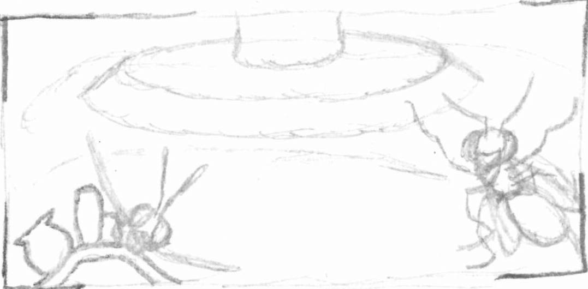
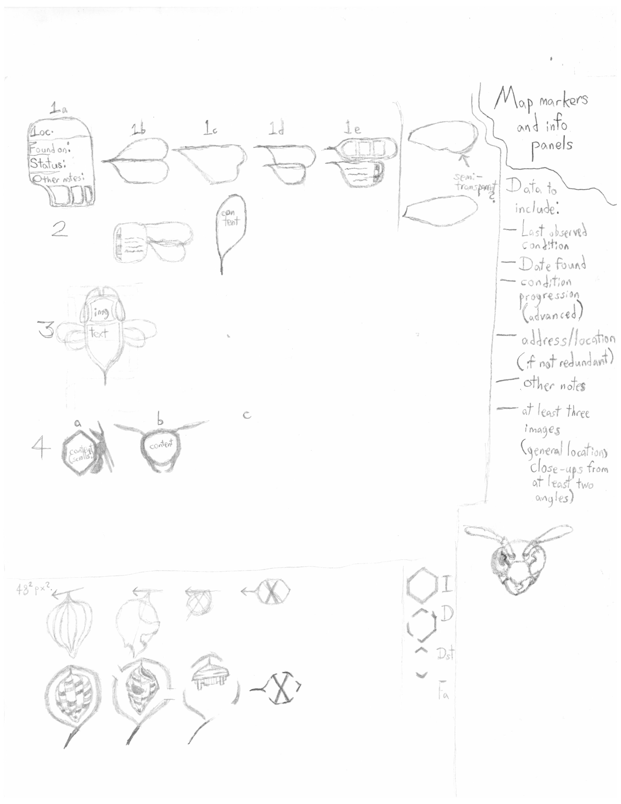

Project Duration: Fall to Winter of 2024, ending early 2025
Project Budget: None needed! But improves if I pay for more map features and data

~Placeholder!~
Table of Contents
This independent report catalogues the whereabouts and observed condition of all wasp nests
I've found in my neighborhood and others nearby.
It is not intended to vilify wasps or any other being. I hope for it to respect, ponder, and share them
honestly.
I also wanted to challenge myself to incorporate some of my creative ability on this page, including visual and aural
arts.
*Throughout this project page, "nest" will refer to the nest of a wasp or bee unless otherwise specified.
*I captured every non-satellite photo that appears on this page.
*Nature is itself and prone to change--take nothing presented, observed, or pondered here as immutable truth.
Origin
This project owes its existence simply to nature, my own curiosity, and opportunity.
While en route to a class trip around November of 2024, I spied a low-hanging wasp nest and photographed it. Later on, I
recalled the handful of them I happened upon in 2022 and 2023. Since I was gifted a superb camera and so often
travel with it, I decided to log any other wasp nests that I could find during the colder seasons.
Over the months, I came to realize that this was great timing for such a survey. In Fall and Winter, the wasps are
dormant or in hiding, and the nests are much easier to find with many trees bereft of foliage.
I live near an edge of Brooklyn, on a veritable boundary between it and Queens, so it's easy to reach a variety of
neighborhoods within but a 45-minute walk.
What are Wasps?
As you may know, wasps are winged insects within the Order
Hymenoptera, a classification they share with bees, ants, sawflies, and a few other relatives.
Wasps are NOT bees. They do seem to be ancestors from which many bees developed, however. Hornets are
specific types of wasps with more robust bodies.
Many people know or revile wasps for their potent bites, venomous stings, or other natural armaments and
defenses. Wasps, unlike most bees, are also capable of stinging repeatedly without dying, and some humans are
allergic to their venoms. Said stingers are actually modified
ovipositors, so males lack them. But some male wasps may have
less-threatening defensive spines instead.
There are several subfamilies of wasps, with different social and nesting habits. While humans commonly acknowledge
bees for their great work as pollinators, wasps can as well, though to a lesser degree. Outwardly and
behaviorally, wasps are less adapted for the kind of pollination bees can perorm superbly. Wasps have fewer
hairs than do bees, and lack their pollen-collecting leg "baskets". However, some wasps who pollinate plants
specialize, and give their best aid to select plant species. Certain sorts even spend part of their life cycle
within fruits.
Some wasps hunt and capture other arthropods to feed to their offspring or set eggs within. In this way, they
can be formidable pest countermeasures for agriculturalists if introduced carefully. This means of employing
other creatures to help minimize damage to crops, the environment, and human consumers is a part of
IPM.
Tools for the Task
Beyond the computer, data storage, and software used to code this page, I needed my camera, binoculars, and
any sort of notepad. The camera (with zoom lens) and binoculars are both great for combing trees and
buildings for nests. A cell phone camera may be suitable, too, but you might need to zoom more powerfully
than some phones can and use manual controls to retain a clear image.
Identifying Nests
Wasps are diligent builders, although not all chew and collect wood fibers to build the classic, paperlike,
aerial nests
that you'll find catalogued in my map below. Some instead nest in smaller pot or cannon-shaped cells of mud.
Some species may nest underground, within pipes, under the eaves of roofs, and in other places that may
bring them close to humans.
During my first job in a video game store, I even once found wasp nest cells inside of a used Nintendo
Entertainment System cartridge (which still worked once cleaned!) I wish I had photos of it.
Come the cold seasons, these nests are abandoned. Mated queens, bearing their next generation of eggs, seclude themselves
in dormancy. They are often the only survivors. Although wasps remember attractive locations, they don't tend to risk
reusing a nest if it endures.
Wasps even perform great home upkeep, not only mending damage, but at times manually heating, aerating, or
removing moisture from their homes.
I don't disturb wasp nests, but this project has given me a welcome chance to observe them over a frame of
several months. Most that I've found have become well-worn, with no one actively repairing them, and a few
have fallen and been erased completely by weather. But so many of them endure despite the snow, wind, and
rain, and remain recognizeable. This gradual collapse has treated me to some interesting interior views.
Daylight is an important resource, since other creatures' nests and leavings (including those of humans!)
can look similar in the shade or from a distance. Squirrel/bird nests, branch-bound balloons, plastic bags, and
even pants have all been distractors. I don't mark an insect nest on my map until I've affirmed that it is one.
Some similar-looking objects: a squirrel nest, a sawn tree, and a plastic bag.
(Hover over an image to zoom)
Procedure and Tips
My ways of seeking and logging these nests have become more thorough over the months,
and may yet improve in similar future efforts. The main aspects of this info collection are
Pathing (determining the routes you scout);
Searching (how you look for these nests);
Logging (how you record your findings.)
The point of proceduralizing this isn't rigidity, but repeatability and data retention!
The more reliable your methods, the more you'll chances you'll have for engaging observation.
I don't discourage searching or wandering on a whim--it is fun and ofttimes rewarding.
With some of the tools mentioned above (or your alternatives,) enough memory for at least
100 photos, and knowledge of the day's forecast, I'd do the following on any outing for this project:
Pathing
If you intend to search a large and especially unfamiliar area, try to have a visual copy of it that you can edit.
Any means will do; a physical print, digital, or another of your making.
Mark your route as you travel. Intersections are fine reference points.
If you're on a round trip, trek down a different side of the street or a different street entirely on the return
to broaden your search.
Veer down side streets if you have the time and desire.
Searching
Look for paper nests not only in trees, but on the ground, under building overhangs, and on other structures.
Look for signs that a nest may have fallen apart or been removed, such as cells or paper wall scraps on the ground,
or rings where one was once attached to another structure.
Use viewing aids like binoculars to browse branches and surfaces carefully. Nests that have fallen apart or were abandoned early can be very
small.
Verify that an object is/was a hymenopterid nest before you definitely mark it as one.
If you can't tell because of limited lighting or other obstructions, return at another time of day or get a clearer view of it until you're
sure!
Logging
When you find a nest, record its location. You can even do this photographically in a broad shot. You can include a generalization of
its distance from the ground, too. Consider any info that can help someone find it.
Consider snapping landmarks or other reminders like street signs or addressed buildings.
Don't ignore relative size, shape, color, or proximity to other nests. You may eventually be able to draw inferences from them.
Collect several zoomed shots of a nest, and from different angles. What seems pristine from one viewpoint may not be from below or behind.
You can even use hand signals in your photos to help differentiate entries.
Periodically revisit listed nests to check on them. Note changes or occurences, especially major ones. If you'd like to create a time lapse
progression of a specific nest, photograph it from the same position.
Add any nests found to a map at your earliest convenience. This can even be as simple as filling in a spreadsheetor adding notes to a screenshot
of a Google Map. The latter was my method before I learned of other options, and may still be valuable as backup.
If you use a mapping service, try to choose one that befits the scale of your project and the level of
coding ability you're at or want to achieve. I chose ScribbleMaps since it allows custom map markers and map imbedding
even with a free account. Had I also taken advantage of Scribble's spreadsheet support, it would have been much easier to track
and update my entries. I initially wanted to submit this project once I found 35 nests, but am now beyond twice that.
Please consider using a spreadsheet if you expect your map to have over 20 entries, especially if they can change.
Though this project requires no funds, enough money to pay for Scribblemaps' subscription would absolutely improve it. Only then
would I have the data storage to give every listing at least one image.
Before learning of Scribblemaps (right,) I edited my finds onto Google Maps screenshots (left.) I'd have only had
ungainly ways to update, combine, and present the data had I continued this way.
Resources and Research
Withdrawing library books on all fields I needed to know more of to complete this project--especially
more refined use of html, css, and js.
Being granted a replacement camera to begin taking photos again.
Studying and exploring free Geographic Information Systems (GIS,) which can be used to create and
integrate interactive maps into a site.
Gaining inspiration to envisage or compose the artistic elements of this page.
Nest Totals:
As of 12/27/2024: 31
As of 1/30/2025: 47
As of 2/28/2025: 64
As of 3/4/2025: 71
As of 3/23/2025: 82
As of 4/13/2025: 100
As of 4/17/2025: 112
As of 4/20/2025: 127
As of 5/1/2025: 140
As of 5/8/2025: 166
Brainstorming This Page
Many draft pages and files went into learning orchestrating various intriguing layouts, features, and art pieces that I
ultimately failed to complete.

The greatest challenge of this project by far has been learning to incorporate an interactive map. I've found over seven
dozen nests, and have multiple pictures of each, so I also needed to consider ways to make that load less taxing on
a viewer's device. I considered using html map elements to create a map, but with so many areas to define, and hundreds
of images to apply for the nests, it could be impractical.
A lesser yet tall impediment was the loss of my camera, which suffered terminal moisture damage when I took it outside
briefly during light snow early in December. That rendered me unable to take fine quality photos for a month.
Back in November, I didn't think the project would reach this total or scale. My older photos for this plan weren't labeled or
documented as well.
I also want this project to feature original artwork of my own creation, which is difficult since I seldom finish any of my art.
I forayed into the use of
Piskel, a free, browser-based pixel art application, to create
the icons for my map.
Similarly, I learned use of
MuseScore 4, to give myself of means applying music I created to this page. My original
way of composing music is much more convenient and still my preference, but doesn't let me share files as easily or
completely.
The survey and photography were simple and fun, but as anything, can be improved. For example, if I wanted to make this info more
exhaustive, I could give each nest a designation and update its info box with a new picture every time I see it. That would allow
onlookers to see its deterioration (or repair!) progressively.
I could also use my voice recorder to take such notes efficiently. Handling a notepad and repeatedly swapping camera lenses
is at times inconvenient.
Also, taking pictures of wasp nests on a home can make the human tenants suspicious. Thankfully, many are but curious, understanding,
and ultimately supportive. But I've come to always have this page or my map open on my cell phone to help explain myself. Perhaps a
customized shirt, hat, or wearable sign could help ease others.
Research revealed that there are several ways to code and feature interactive maps, though some are beyond my present ability.
No matter, developer tools and general curiosity can teach well.
This list
presents several interactive mapping services, some of which have free versions.
Minerva's Owls,
the website of an art collection I adore, has an interactive map with the features mine should strive for.
Its clean and readable map markers are especially fun.
Google Maps also offers interactive map APIs, which look to be tutorialized well.
Before I present the map, you may want to know what each of its markers mean.
Nest condition will be given as intact, damaged, destroyed, or fallen.
States of wasp nest integrity
Intact
Damaged
Destroyed
Fallen
This nest is in fine condition. Surpsingly many have
remained this way.
This nest may have some peeling or torn walls, but
remains whole overall. Interior cells may be exposed.
Nature has likely worn this nest to shambles.
It still hangs, but as just a few exposed cells.
Alternately, it may have belonged to a small group
that had to abandon it prematurely. Some wasp
species normally build small, open nests like this,
so there's also a chance it was always this way.
This nest has fallen from its host branch or structure.
It'll likely be erased after a few more
days of weathering. You may no longer be able to find it.
How to Use This Map
My custom markers are yet incomplete, so I have to use Scribble's for now. Reddish markers indicate nests found on or after May 1, 2025.
Green markers represent those added between February 21, 2025 to April 30, 2025. Blue markers are the oldest--those
found between November, 2024 and late February, 2025. A marker that's tipped over horizontally denotes a fallen nest.
You can click on a marker to see more details about its nest, though I still have to fill a few in. Any highlighted perimeter has a
summary you can access the same way. Again, a free ScribbleMaps account doesn't offer enough memory for me to post a photos of every
location. You can use the settings in the lower-left corner to allow markers to cluster, then zoom out to see my present total.
I live on the edge of East New York, and regularly transit several bordering areas throughout my common doings. I visited Fulton Park twice,
and was excited to find several wasp homes there. If I continue or renew this project, I'll be sure to roam a few new areas that I can
comfortably access.
Between late October and the date I wanted to submit this page, I found over 80 hymenopterid nests. The greatest counts of nests on single block back then
(10 and 8, respectively) were on a large block with ample grass, and the block of a community farm I live near. Unsurprisingly, they seem to be most
concentrated around large parks and gardens. There looks to be some variety in nest construction, likely the consequence of different species
or available materials. Perhaps especially versed or knowledgeable observers could surmise which materials they used by nest color.
For every nest I found, there are undoubtedly many that I did not or cannot, and many possibly lost to conditions before my search.
Observations and Curiosity
I've seen striking blues, greens, and orange on some wasp homes. Might some also use human litter as building material?
Of all the nests I've found so far, at least 20 were on buildings.
The most I've seen on a single building is 4.
I've yet to find any nests in
evergreen trees.
A few of these insect nests are very close to home windows, and I'll be sure to warn anyone who minds and may not realize. Perhaps an ecologist or botanist knows
if these insects prefer to live on or build with certain plant species.
Over my last few weeks of searching in February, a few mapped nests may have been removed. Might my searches have been responsible? They occasionally drew attention to nests as passersby realized what I was actually looking
at.
There's a chance that the especially small, open nests found in mid-late April could be new. I'll check if they've grown or seem active several weeks later.
On May 8, 2025, I noticed that one little nest had a wasp on it, and may be active.
If the differences in texture and shape are indicators, I think these nests were made by different species.
Notable Areas
Richmond St and Chestnut St, near Highland Place.
A neighborhood I wandered mid-May. It's replete with nests, many of which may be newly-built.
76th-78th St, along 101st Ave.
This neighborhood is near Liberty Avenue and "City Line," a long street that abounds with
stores. Most of these homes have gardens, and there are some large parks nearby.
Cypress Hills Park
A park on a large block, with surprisingly few nests. But during the first few months of my survey,
it had the most nests by merit of its size alone.
Pink Houses Community Farm
Quite close to where I live, this block had a notable count of nests, which four virtually bordering
the community farm itself.
My neighborhood
Despite my proximity to this area and how often I travel it, several nests here went unnoticed
for months. This project even gave me reason to explore some blocks and areas of housing that
I never have.
Appealing Finds
Near March's end, I chanced upon a pair of woodpeckers eating from an abandoned wasp nest. That's fine demonstration of an ecological role wasps serve.
I've had the opportunity to see and analyze a few nests after they fell, and was even able to collect the nest shown below for some photos.
I especially appreciated a close view of the support columns that the wasps use to secure extra "floors" of their home. There are even a few unfortunate
adults left in one of them.
I've known subways and modern buildings to employ bird-deterrent spikes to try to discourage their habitation. While I've seen or read of various attempts
at wasp misdirection, like artificial nests or painting walls to look like the sky, I don't know how well any work. As the climate shifts, these insects
may become increasingly prominent neighbors to humans. Perhaps that can be mindfully coordinated to help protect attractive crops that they and other beings
mutually enjoy.
As with many living things, there still exist techniques or traits of wasps that humans can productively emulate. The kinematics of insect flight readily
inspire miniature flying machines, and their nest architecture could yield space-efficient storage or housing features.
Other possible muses include their ways of communicating and navigating (though perhaps not as well-reported or sophisticated as those of bees); their
ways of processing and waterproofing material; and the stinger's similar function to syringes.
In fact, I wonder if containers like these were partly derived from hexagonal nest cells.
This project was a great delight, and gave me a new way to enjoy the outdoors during a season when some of my favorite activities aren't available.
It was a joy to exercise my observation, curiosity, and photo skills, and watching the nests endure or change over time was insightful. I'll be able to
document or organize any similar future endeavors better, too.
Voices of the Public
I earned a variety of responses from onlookers, from puzzled gazes to concern, curiosity, or amusement. Many responders have been supportive, and expressed
their wishes for me to see this project through or make something further of it. Some interactions are paraphrased below.
Sydul, a local librarian, during the early months of this task:
"You found that many so far? I wish they were bees instead."
Artise, one of my closest friends, upon being told about this project:
"Yeah, I'm not a fan of wasps... I had to fight some not too long ago."
A friendly stranger who was curious about my photography and learned of my project:
"Interesting! I wish you the best. Are you sure this shouldn't be about bees, though? We're losing them!"
I've made two attempts to report potentially inconvenient nests on a home to their human tenants so far:
On 3/29/25, I tried to contact the inhabitants of 54 Euclid Ave when I found a nest. No one answered, but a neighbor who was sweeping the sidewalk did. He
offered to tell them, and also took interest in my project, wondering if it was my profession. He hadn't noticed the nest before our meeting, and asserted
that he's originally from Arizona, where he never saw some of the insect species common here in NY.
A woman living at 137-33 79th Street had known of the nest(s) above her window for years. The insects have never caused trouble, so she doesn't mind it, and
respectfully acknowledges that they must have chosen that spot for a reason. Most of these nests see use for just one active year, so I wonder if it's still in
use, and by what.
On 4/20/25, while I walked past a home, a neighbor asked what I was doing. He called my attention to the outline of a nest removed from his neighbor's
house, and shared that she had to pay several hundred dollars for that service.
Wasps look to have a well-established population in this state, and will likely continue to.
But what variety of species do we share these neighborhoods with, and how have their numbers
been changing? I hope that ours aren't a grievous hazard to other pollinators, but
their presence could well harmonize with indoor or hydroponics farmers looking for some crop
protectors. This is, of course, a huge generalization. Their diets and the long-term
effects of their presence and "employment" mightn't be so predictable. I hope this project will
draw some interest in wasps and their potential effects on the region without purely inciting
an aversion to them. I'd love for this effort to prove useful for some nearby ecologists or
other scientists/enthusiasts. Perhaps there's some correlation between wasp density and the
introduction or spread of other local lifeforms or factors. Human homes are clearly secure
structures for these hymenopterids, and they can make use of building surfaces in ways humans
can't (even when undesired.)
During one of my class trips in Change-Food-For-Good's Intro to AgTech course, I briefly
glimpsed a captivating structure in the distance. A guide told me that it's the Pollinators' Pavillion,
a structure made to foster and observe various solitary bee species, though it wasn't presently in service.
Could agriculturalists use similar, smaller-scale sctructures to peaceably invite wasps?
Might any of New York's local wasps be safe
biocontrol methods against the spotted lanternflies which
are presently a danger to select crops? I'm not sure that any of our local wasps could comfortably make meal
of adult lanternflies, though they don't reach that state until mid-Summer.
A Smattering of Sources
Here are some of the books that contributed to the creation of this page:
Kracht, Matt (2023). OMFG, bees!; Chronicle Books
An approachable book on bees, with some wasp info peppered throughout. Its humorously subjective, but at least as passionate and pleasantly-illustrated. It takes a more casual approach to presenting info, but dispenses some nice, modern facts.
Dawe, Jennifer., & Humphries, Matthew (2019). Make your own pixel art.; No Starch Press
A fine introductory book of pixel art. Its largely focused on character sprites, but gives some fine info on shading and more as well.
Miller, Brian D., & Ackerman, Jason (2022). Principles of web design.; Allworth Press
This is a rather focused book that guides one on many tenets of site design. It teems with examples seen on various modern sites, and discusses
navigability, grid/column layouts, and the worth of giving one's site a recognizeable visual style or theme.
Kernin, Jennifer. & Meloni, Julie C (2019). Sams Teach yourself html, css, and javascript, Third Edition.; Pearson
Though no longer recent, this is a thorough book on these three fundaments of webpage design, with a lot of good practices for user-focused site design.
Having done this, I'm excited to try to incorporate Kindwise's insect and mushroom identifiers into this site next.
I'd like to learn if it can hypothesize wasp species by nests. I relayed a few messages with some
company staff, and learned that the identifier was trained with some images of wasps on nests. Still,
it isn't expected to be able to gauge species by such a sight
alone.
I may also present this to any curious botanists or ecologists, who may be able to descry some correlation
between the types of plants in an area and its wasp population.
I'm likely to repeat this project next year, from a fresh count, and hopefully with better methods, coding, camera skill,
and accessories.
I want to complete all of my unfinished art on or mentioned on this page, or fashion better alternatives.
That means the banner image, music, and custom map markers.


 I've seen striking blues, greens, and orange on some wasp homes. Might some also use human litter as building material?
I've seen striking blues, greens, and orange on some wasp homes. Might some also use human litter as building material?
 Of all the nests I've found so far, at least 20 were on buildings.
Of all the nests I've found so far, at least 20 were on buildings.
 There's a chance that the especially small, open nests found in mid-late April could be new. I'll check if they've grown or seem active several weeks later.
There's a chance that the especially small, open nests found in mid-late April could be new. I'll check if they've grown or seem active several weeks later.
 On May 8, 2025, I noticed that one little nest had a wasp on it, and may be active.
On May 8, 2025, I noticed that one little nest had a wasp on it, and may be active.